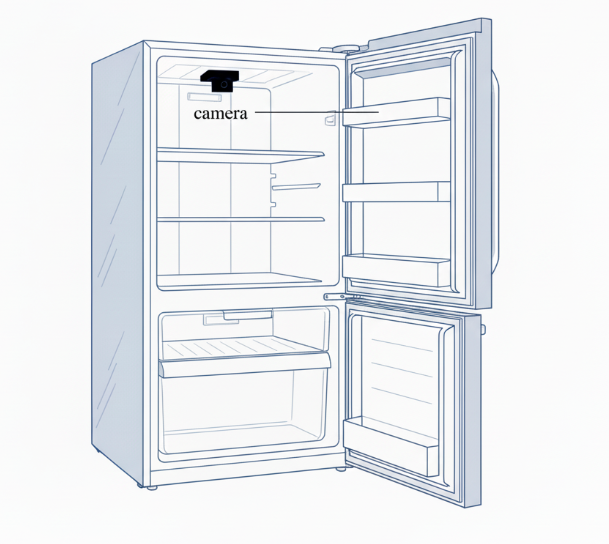
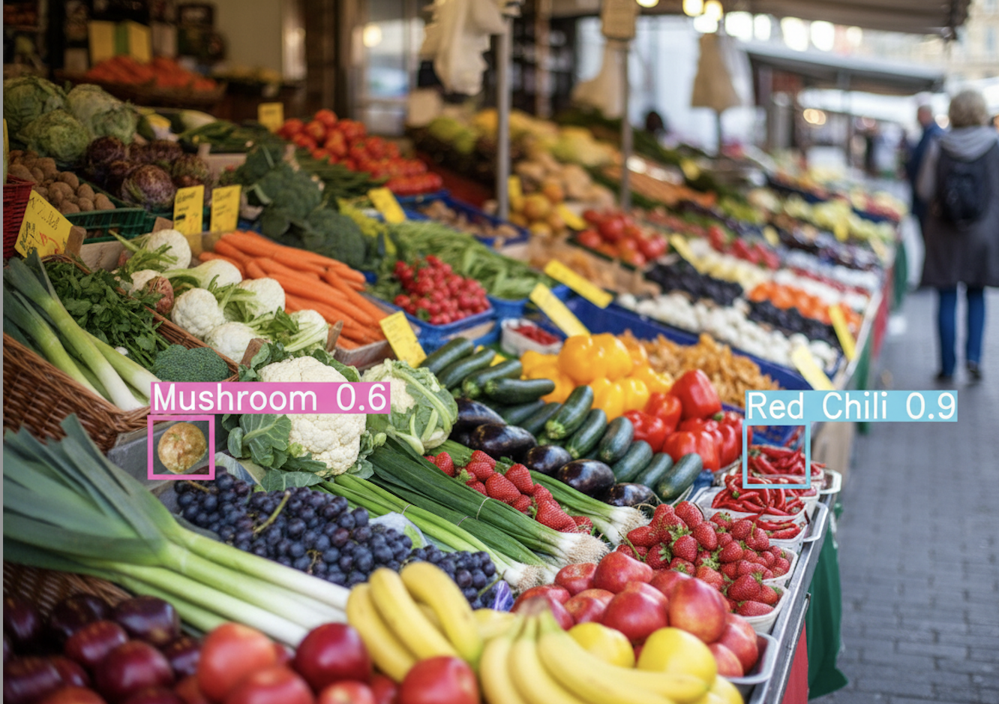

Welcome to this tutorial!
Machine learning and computer vision have become increasingly important in the field of food identification, especially for object detection. In this tutorial, you’ll explore how deep learning models recognize food in refrigerators, and real-world environments, while also learning about their applications, limitations, and future directions.
This tutorial is divided into two main parts:
1. Food Identification in Refrigerators – How advanced models such as BroadFPN-YOLACT [1] with Simu-Augmentation improve recognition under varying distances, small-object challenges, and cluttered backgrounds, helping households manage food more efficiently.

Smart Refrigerator with Camera. ImageSource: AI-generated illustration.
Key Takeaways
Reduce Food Waste
Real-time Detection
Small Object Recognition
2. Food Identification in Real-world environments – The second part mainly investigates new methods to enhance fruit and vegetable detection in complex real-world environments, where challenges such as varying illumination, occlusion, and the diversity of shapes, sizes, and colors make accurate detection particularly difficult.

Fruits and Vegetables in Real-world Environment.
ImageSource: AI-generated illustration
Key Takeaways
Unconstrained Environments
New Detection Model
Improved Detection Accuracy
- Based on: FRUVEG67 dataset + FVDNet model ([2])
- Focus: Robust fruit and vegetable detection in real-world, unconstrained environments (markets, kitchens, refrigerators) with occlusions, varied lighting, and cluttered backgrounds ([2])
- Applications: Enable automated sorting/packaging food, enhance smart food systems, and help children recognize and identify food.
Learning Objectives / What You’ll Learn
- Understand challenges in refrigerators & real-world scenes (small objects, occlusions, clutter).
- Learn advanced technical principles and how they handle difficult conditions.
- Map applications across markets, smart refrigerators, and education.
- Evaluate model performance and future directions for AI-powered food systems.
Motivation / Why Food Identification Matters
-
♻️
Reduce food wasteReal-time inventory monitoring with smart refrigerators.
-
🤖
Enable smart food systemsAutomated sorting, packaging, and inventory tracking.
-
Reduce operational costsLower shrink and labor through automated recognition and inventory checks.
-
🌍
Promote sustainabilityEfficient resource use and eco-friendly lifestyles.